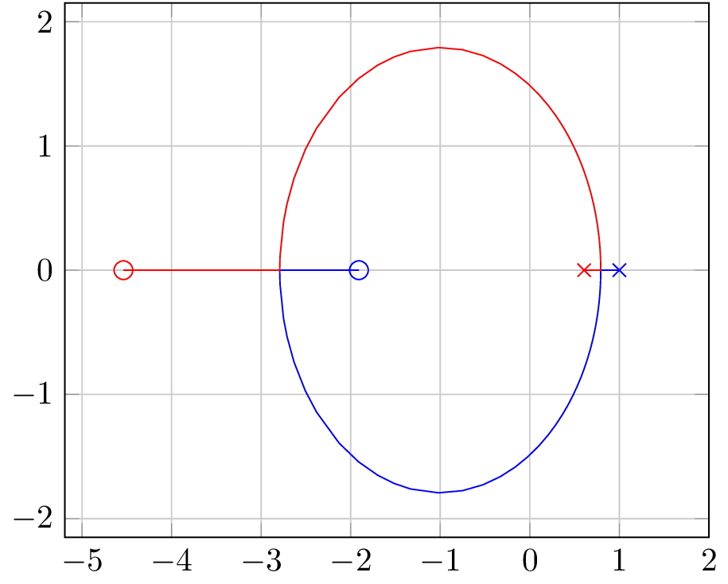

\documentclass{standalone}
\usepackage{pgfplots}
% Manually removed entries to plot a "better" root locus in latex, of course using matlab 2 tikz is much better.
\pgfplotsset{compat=1.11}
\pgfplotstableread{
pr1 pi1 pr2 pi2 k
1.0000 0 0.6065 0 0
0.9272 0 0.6672 0 0.0121
0.9109 0 0.6814 0 0.0142
0.8887 0 0.7011 0 0.0166
0.8541 0 0.7329 0 0.0195
0.7987 0 0.7863 0 0.0215
0.7925 -0.0000 0.7925 0.0000 0.0215
0.7925 -0.0062 0.7925 0.0062 0.0216
0.7918 -0.0482 0.7918 0.0482 0.0228
0.7899 -0.0967 0.7899 0.0967 0.0268
0.7876 -0.1326 0.7876 0.1326 0.0313
0.7849 -0.1649 0.7849 0.1649 0.0367
0.7817 -0.1961 0.7817 0.1961 0.0430
0.7780 -0.2272 0.7780 0.2272 0.0504
0.7737 -0.2588 0.7737 0.2588 0.0591
0.7686 -0.2915 0.7686 0.2915 0.0693
0.7627 -0.3255 0.7627 0.3255 0.0812
0.7557 -0.3613 0.7557 0.3613 0.0951
0.7475 -0.3989 0.7475 0.3989 0.1114
0.7380 -0.4387 0.7380 0.4387 0.1306
0.7267 -0.4810 0.7267 0.4810 0.1530
0.7136 -0.5259 0.7136 0.5259 0.1793
0.6982 -0.5737 0.6982 0.5737 0.2101
0.6802 -0.6245 0.6802 0.6245 0.2462
0.6590 -0.6787 0.6590 0.6787 0.2885
0.6342 -0.7364 0.6342 0.7364 0.3380
0.6052 -0.7977 0.6052 0.7977 0.3961
0.5712 -0.8628 0.5712 0.8628 0.4641
0.5313 -0.9317 0.5313 0.9317 0.5439
0.4846 -1.0045 0.4846 1.0045 0.6373
0.4299 -1.0810 0.4299 1.0810 0.7468
0.3657 -1.1610 0.3657 1.1610 0.8751
0.2906 -1.2440 0.2906 1.2440 1.0254
0.2025 -1.3293 0.2025 1.3293 1.2015
0.0993 -1.4158 0.0993 1.4158 1.4079
-0.0217 -1.5019 -0.0217 1.5019 1.6498
-0.1634 -1.5853 -0.1634 1.5853 1.9332
-0.3294 -1.6623 -0.3294 1.6623 2.2653
-0.5240 -1.7281 -0.5240 1.7281 2.6545
-0.7520 -1.7752 -0.7520 1.7752 3.1105
-1.0192 -1.7924 -1.0192 1.7924 3.6449
-1.3323 -1.7614 -1.3323 1.7614 4.2710
-1.5157 -1.7167 -1.5157 1.7167 4.6379
-1.6991 -1.6505 -1.6991 1.6505 5.0047
-1.9140 -1.5419 -1.9140 1.5419 5.4346
-2.1290 -1.3923 -2.1290 1.3923 5.8645
-2.3809 -1.1429 -2.3809 1.1429 6.3682
-2.5068 -0.9709 -2.5068 0.9709 6.6201
-2.6327 -0.7398 -2.6327 0.7398 6.8719
-2.7108 -0.5349 -2.7108 0.5349 7.0281
-2.7498 -0.3886 -2.7498 0.3886 7.1062
-2.7889 -0.1135 -2.7889 0.1135 7.1843
-2.7925 -0.0000 -2.7925 0.0000 7.1915
-2.6825 0 -2.9097 0 7.1987
-1.9082 0 -4.5377 0 8.0524
}\mytable
\begin{document}
\begin{tikzpicture}[
%This is to provide the start point cross marker
start marker/.pic={\draw (-#1,-#1) -- (#1,#1) (#1,-#1)--(-#1,#1);}
]
\begin{axis}[no marks,xmax=2,grid=both]% Don't put any markers, limit the visible area from one side ,draw grid
\foreach\x in{1,...,2}{% Iterate over the columns of the table
\addplot+[] table[x=pr\x,y=pi\x] {\mytable} % Draw the curves
node[draw,circle,inner sep=2pt] at (current plot end) {}%Put the ending marker with size adjusted to 2pt
pic at (current plot begin) {start marker=2pt};%Put the starting marker
}
\end{axis}
\end{tikzpicture}
\end{document}